内容要点
[种草R]家人们，上一期东哥带大家实操了线性渐变蒙版，领略了蒙版的神奇魔力。今天，咱们继续深挖蒙版工具，重点讲讲画笔蒙版，实操干货直接拉满！ 🎨画笔蒙版使用要点 [种草R]局部精准调控：画笔蒙版堪称局部调整神器，无论画面区域形状多奇葩、面积大或小，都能通过画笔轻松圈定。 [种草R]三属性自由调控（图2） [烟花R]大小：大面积涂抹就调大画笔，快速覆盖；处理睫毛、发丝等细节时，缩小画笔精准描绘。图 3 里画笔大小 1、20、40 的效果，差别一目了然。 [烟花R]羽化：羽化值越高，画笔边缘越柔和，过渡超自然；羽化值越低，边界越清晰。参考图 4，羽化值 1、50、100 下，边缘变化超明显。 [烟花R]流畅度：等同于墨水流量。低流量每次上色浅，适合多次叠加；高流量一次上色浓。看一下图 5，流畅度 30、50、100，颜色浓度大不同。 [种草R]橡皮擦纠错功能：创建画笔蒙版后，橡皮擦自动上线。画错位置、涂多了？一键擦除，毫无压力！ 🖼实操案例：光影氛围升级 [种草R]以图 7 为例，水岸两边高光部分想让它更亮更暖，强化光影效果。但区域不规则，AI 识别蒙版、线性渐变蒙
知识结构
[种草R]家人们，上一期东哥带大家实操了线性渐变蒙版，领略了蒙版的神奇魔力。今天
[种草R]家人们，上一期东哥带大家实操了线性渐变蒙版，领略了蒙版的神奇魔力。今天
[种草R]家人们，上一期东哥带大家实操了线性渐变蒙版，领略了蒙版的神奇魔力。今天
[种草R]家人们，上一期东哥带大家实操了线性渐变蒙版，领略了蒙版的神奇魔力。今天
- [种草R]家人们，上一期东哥带大家实操了线性渐变蒙版，领略了蒙版的神奇魔力。今天，咱们继续深挖蒙版工具，重点讲讲画笔蒙版，实操干货直接拉满！ 🎨画笔蒙版使用要点 [种草R]局部精准调控：画笔蒙版堪称局部调整神器，无论画面区域形状多奇葩、面积大或小，都能通过画笔轻松圈定。 [种草R]三属性自由调控（图2） [烟花R]大小：大面积涂抹就调大画笔，快速覆盖；处理睫毛、发丝等细节时，缩小画笔精准描绘。图 3 里画笔大小 1、20、40 的效果，差别一目了然。 [烟花R]羽化：羽化值越高，画笔边缘越柔和，过渡超自然；羽化值越低，边界越清晰。参考图 4，羽化值 1、50、100 下，边缘变化超明显。 [烟花R]流畅度：等同于墨水流量。低流量每次上色浅，适合多次叠加；高流量一次上色浓。看一下图 5，流畅度 30、50、100，颜色浓度大不同。 [种草R]橡皮擦纠错功能：创建画笔蒙版后，橡皮擦自动上线。画错位置、涂多了？一键擦除，毫无压力！ 🖼实操案例：光影氛围升级 [种草R]以图 7 为例，水岸两边高光部分想让它更亮更暖，强化光影效果。但区域不规则，AI 识别蒙版、线性渐变蒙
[种草R]家人们，上一期东哥带大家实操了线性渐变蒙版，领略了蒙版的神奇魔力。今天，咱们继续深挖蒙版工具，重点讲讲画笔蒙版，实操干货直接拉满！ 🎨画笔蒙版使用
1/15–4/15封面/要点：[种草R]家人们，上一期东哥带大家实
[种草R]家人们，上一期东哥带大家实操了线性渐变蒙版，领略了蒙版的神奇魔力。今天，咱们继续深挖蒙版工具，重点讲讲画笔蒙版，实操干货直接拉满！ 🎨画笔蒙版使用要点 [种草R]局部精准调控：画笔蒙版堪称局部调整神器，无论画面区域形状多奇葩、面积大或小，都能通过画笔轻松圈定。 [种草R]三属性自由调控（图2） [烟花R]大小：大面积涂抹就调大画笔，快速覆盖；处理睫毛、发丝等细节时，缩小画笔精准描绘。图 3 里画笔大小 1、20、40 的效果，差别一目了然。 [烟花R]羽化：羽化值越高，画笔边缘越柔和，过渡超自然；羽化值越低，边界越清晰。参考图 4，羽化值 1、50、100 下，边缘变化超明显。 [烟花R]流畅度：等同于墨水流量。低流量每次上色浅，适合多次叠加；高流量一次上色浓。看一下图 5，流畅度 30、50、100，颜色浓度大不同。 [种草R]橡皮擦纠错功能：创建画笔蒙版后，橡皮擦自动上线。画错位置、涂多了？一键擦除，毫无压力！ 🖼实操案例：光影氛围升级 [种草R]以图 7 为例，水岸两边高光部分想让它更亮更暖，强化光影效果。但区域不规则，AI 识别蒙版、线性渐变蒙
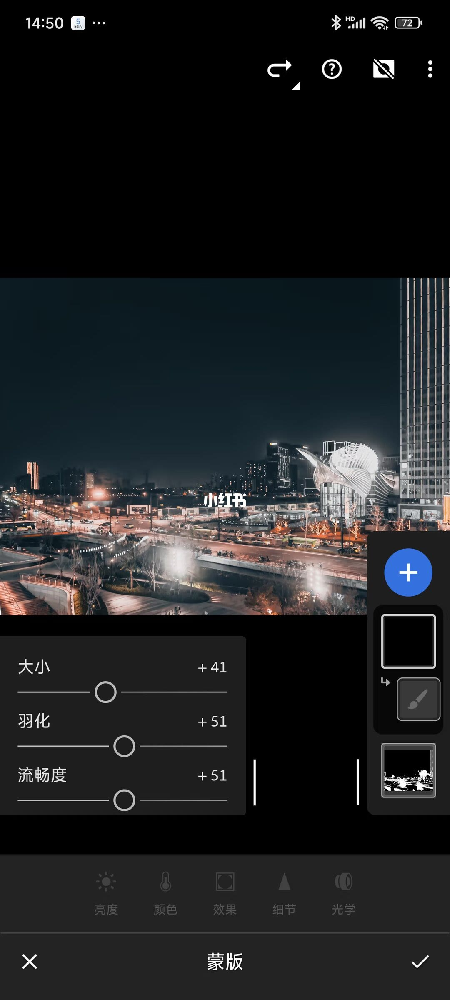
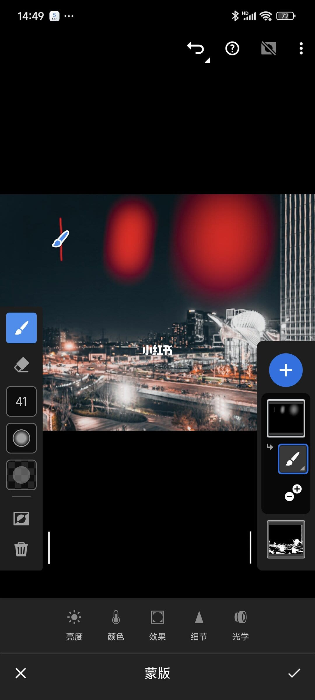
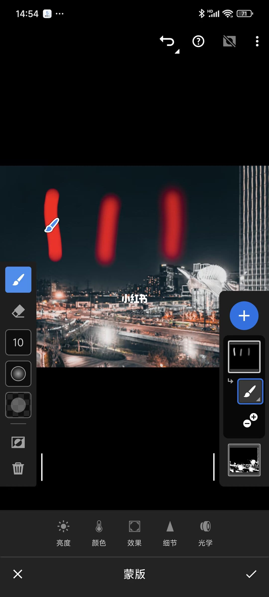
5/15–8/15第5/15页：掌握LR 画笔蒙版！👉1 招搞定随
[种草R]家人们，上一期东哥带大家实操了线性渐变蒙版，领略了蒙版的神奇魔力。今天，咱们继续深挖蒙版工具，重点讲讲画笔蒙版，实操干货直接拉满！ 🎨画笔蒙版使用要点 [种草R]局部精准调控：画笔蒙版堪称局部调整神器，无论画面区域形状多奇葩、面积大或小，都能通过画笔轻松圈定。 [种草R]三属性自由调控（图2） [烟花R]大小：大面积涂抹就调大画笔，快速覆盖；处理睫毛、发丝等细节时，缩小画笔精准描绘。图 3 里画笔大小 1、20、40 的效果，差别一目了然。 [烟花R]羽化：羽化值越高，画笔边缘越柔和，过渡超自然；羽化值越低，边界越清晰。参考图 4，羽化值 1、50、100 下，边缘变化超明显。 [烟花R]流畅度：等同于墨水流量。低流量每次上色浅，适合多次叠加；高流量一次上色浓。看一下图 5，流畅度 30、50、100，颜色浓度大不同。 [种草R]橡皮擦纠错功能：创建画笔蒙版后，橡皮擦自动上线。画错位置、涂多了？一键擦除，毫无压力！ 🖼实操案例：光影氛围升级 [种草R]以图 7 为例，水岸两边高光部分想让它更亮更暖，强化光影效果。但区域不规则，AI 识别蒙版、线性渐变蒙
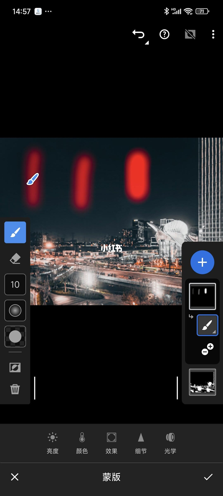
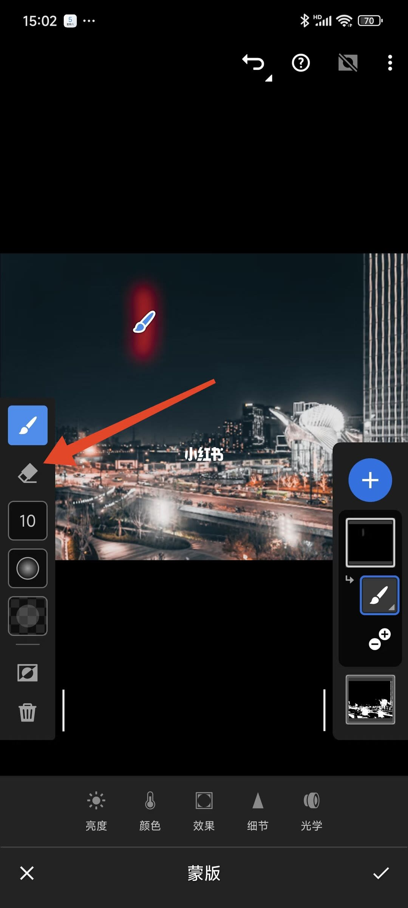
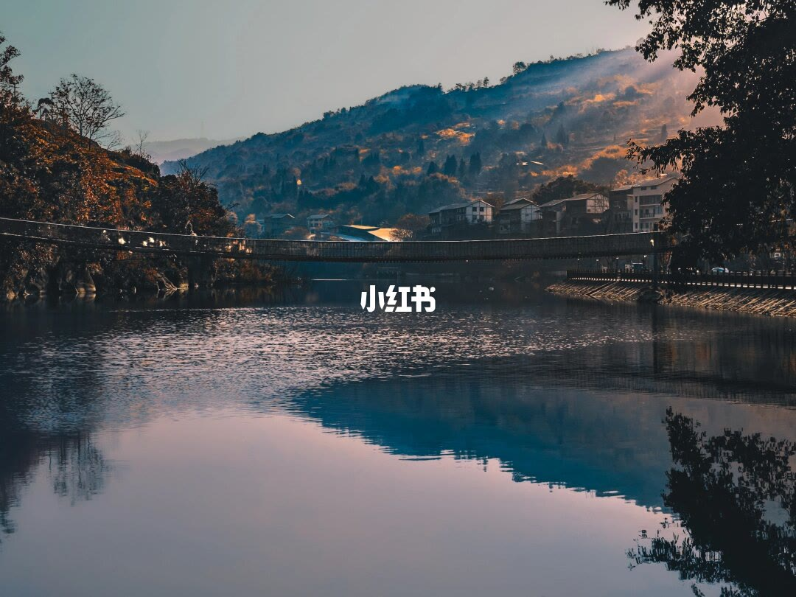
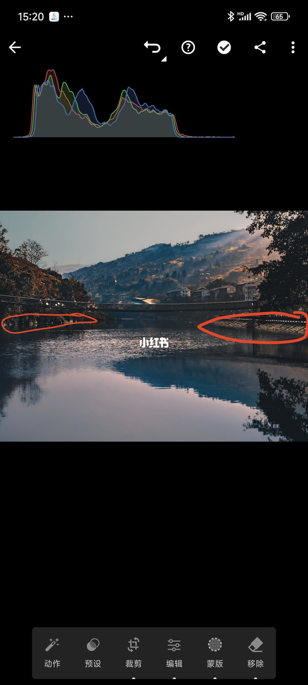
9/15–12/15第9/15页：掌握LR 画笔蒙版！👉1 招搞定随
[种草R]家人们，上一期东哥带大家实操了线性渐变蒙版，领略了蒙版的神奇魔力。今天，咱们继续深挖蒙版工具，重点讲讲画笔蒙版，实操干货直接拉满！ 🎨画笔蒙版使用要点 [种草R]局部精准调控：画笔蒙版堪称局部调整神器，无论画面区域形状多奇葩、面积大或小，都能通过画笔轻松圈定。 [种草R]三属性自由调控（图2） [烟花R]大小：大面积涂抹就调大画笔，快速覆盖；处理睫毛、发丝等细节时，缩小画笔精准描绘。图 3 里画笔大小 1、20、40 的效果，差别一目了然。 [烟花R]羽化：羽化值越高，画笔边缘越柔和，过渡超自然；羽化值越低，边界越清晰。参考图 4，羽化值 1、50、100 下，边缘变化超明显。 [烟花R]流畅度：等同于墨水流量。低流量每次上色浅，适合多次叠加；高流量一次上色浓。看一下图 5，流畅度 30、50、100，颜色浓度大不同。 [种草R]橡皮擦纠错功能：创建画笔蒙版后，橡皮擦自动上线。画错位置、涂多了？一键擦除，毫无压力！ 🖼实操案例：光影氛围升级 [种草R]以图 7 为例，水岸两边高光部分想让它更亮更暖，强化光影效果。但区域不规则，AI 识别蒙版、线性渐变蒙
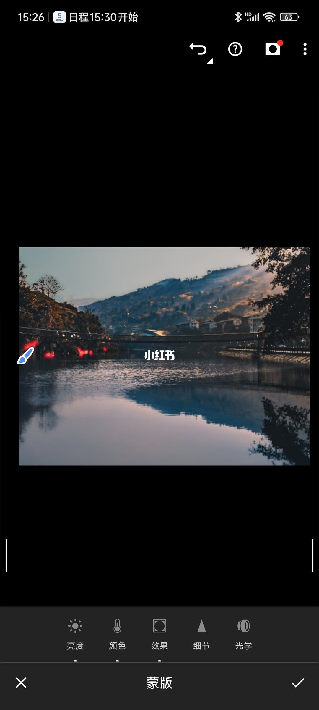
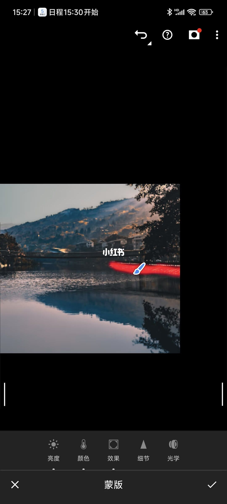
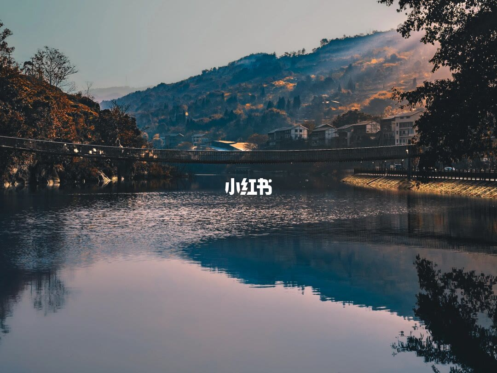
13/15–15/15第13/15页：掌握LR 画笔蒙版！👉1 招搞定
[种草R]家人们，上一期东哥带大家实操了线性渐变蒙版，领略了蒙版的神奇魔力。今天，咱们继续深挖蒙版工具，重点讲讲画笔蒙版，实操干货直接拉满！ 🎨画笔蒙版使用要点 [种草R]局部精准调控：画笔蒙版堪称局部调整神器，无论画面区域形状多奇葩、面积大或小，都能通过画笔轻松圈定。 [种草R]三属性自由调控（图2） [烟花R]大小：大面积涂抹就调大画笔，快速覆盖；处理睫毛、发丝等细节时，缩小画笔精准描绘。图 3 里画笔大小 1、20、40 的效果，差别一目了然。 [烟花R]羽化：羽化值越高，画笔边缘越柔和，过渡超自然；羽化值越低，边界越清晰。参考图 4，羽化值 1、50、100 下，边缘变化超明显。 [烟花R]流畅度：等同于墨水流量。低流量每次上色浅，适合多次叠加；高流量一次上色浓。看一下图 5，流畅度 30、50、100，颜色浓度大不同。 [种草R]橡皮擦纠错功能：创建画笔蒙版后，橡皮擦自动上线。画错位置、涂多了？一键擦除，毫无压力！ 🖼实操案例：光影氛围升级 [种草R]以图 7 为例，水岸两边高光部分想让它更亮更暖，强化光影效果。但区域不规则，AI 识别蒙版、线性渐变蒙
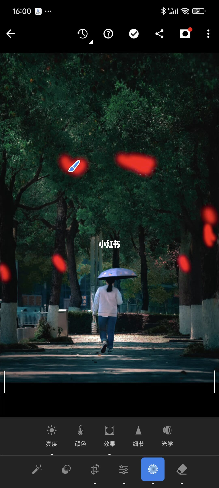
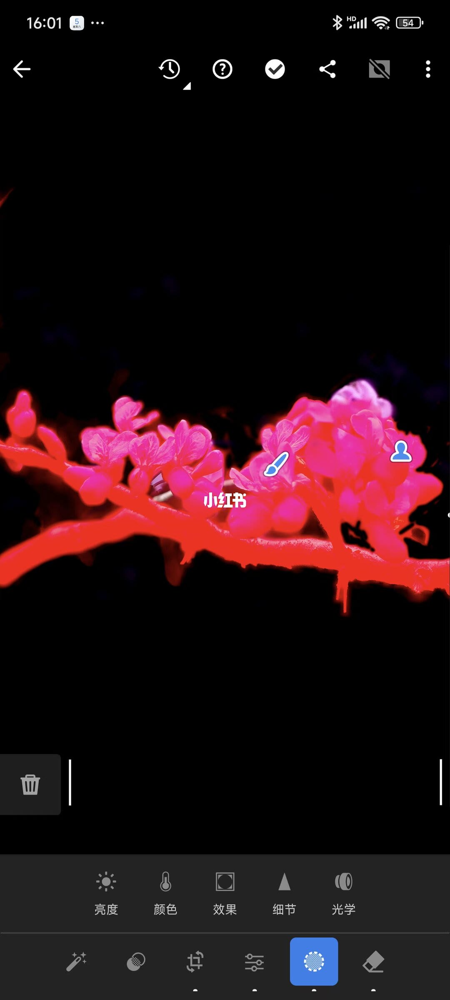
口述/画面要点（15段）
结合 Whisper medium 与画面大字整理；专有名词已校对。
封面/要点：[种草R]家人们，上一期东哥带大家实操了线性渐变蒙版，领略了蒙版的神奇魔力。今天
第2/15页：掌握LR 画笔蒙版！👉1 招搞定随性修图
第3/15页：掌握LR 画笔蒙版！👉1 招搞定随性修图
第4/15页：掌握LR 画笔蒙版！👉1 招搞定随性修图
第5/15页：掌握LR 画笔蒙版！👉1 招搞定随性修图
第6/15页：掌握LR 画笔蒙版！👉1 招搞定随性修图
第7/15页：掌握LR 画笔蒙版！👉1 招搞定随性修图
第8/15页：掌握LR 画笔蒙版！👉1 招搞定随性修图
第9/15页：掌握LR 画笔蒙版！👉1 招搞定随性修图
第10/15页：掌握LR 画笔蒙版！👉1 招搞定随性修图
第11/15页：掌握LR 画笔蒙版！👉1 招搞定随性修图
第12/15页：掌握LR 画笔蒙版！👉1 招搞定随性修图
第13/15页：掌握LR 画笔蒙版！👉1 招搞定随性修图
第14/15页：掌握LR 画笔蒙版！👉1 招搞定随性修图
第15/15页：掌握LR 画笔蒙版！👉1 招搞定随性修图